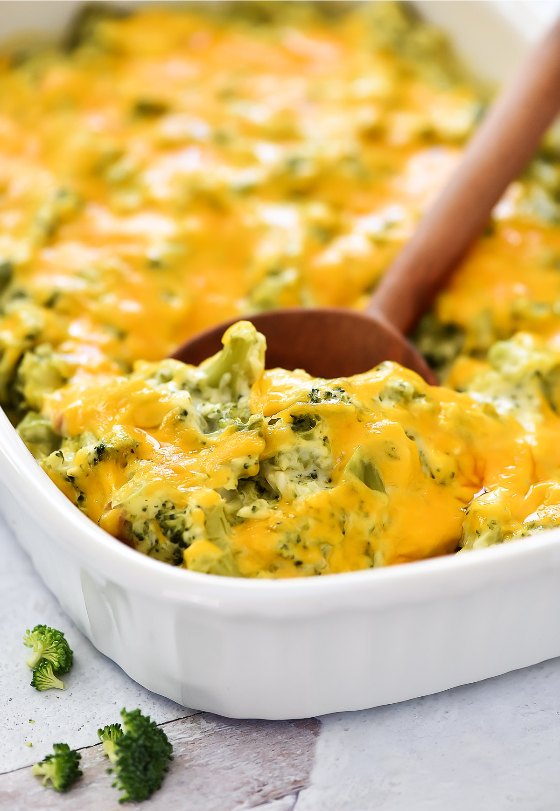

Brocolli Cheese Casserole

Description
Savory casserole made with soup and chicken and cheese
Ingredients
- 1 Package Frozen Brocolli
- 2 Cans Cream of Chicken Soup
- 1 Tablespoon Lemon Juice
- 2 tsp. Curry Powder
- 1 to 2 cups of shredded sharp cheddar cheese
Steps
- (If skinless boneless) Thaw chicken then boil for 20 minutes or until cooked thoroughly.
- Let cool, then cut chicken into small chunks.
- Preheat oven to 350
- Microwave broccolli until cooked thoroughly (about 5 minutes). Drain off liquid.
- Mix together soup, mayo, lemon juice, curry powder. Taste and adjust lemon/curry to taste.
- In 9x13 pan, layer chicken, then brocolli, then mixed ingredients. Don't mix together.
- Top with cheddar cheese.
- Bake for 30 minutes.